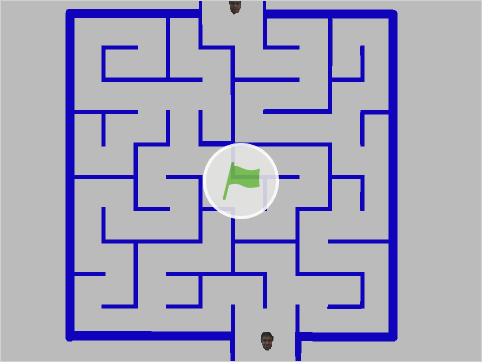

This is my portfolio page, here you will see images of projects or things I have done.
1. I believe bits are little data storages and when they say “It’s all just bits”, it’s true because everything a computer stores is a bit.
2. Moore’s law is the ability to put more and more transistors into a chip making it faster. Moore’s law is slowly losing progress because it will be harder to make 5nm chips in the future. We are reaching the physical limitations of the number of transistors we can put into a chip.
3. I would choose job two because at the last 30 days, it will be a lot of money. This illustrates data transfer between computers and how fast data can spread across the world.
4. It is good because you can advertise your business which is good. On the negative side, you can advertise bad services like Hitmen and that will be extremely illegal.
This app meets a clients meets a clients needs because it takes notes is a homework notetaking app and it does everything it needs to do. We could've added more with time, but it took us three hours to make this application.
Today I used python language to make an interactive story telling mini-game with my friend Ryan. In this game, you are a king who recieves a memssage from a person in ragged clothes, this message is a riddle that you are curious to solve. The adventure starts when you decide to take on the challenge and explore the places the ragged person told you to go.
Trump editedFor this project, I edited an Image of trump and made eight changes to Trumps picture.